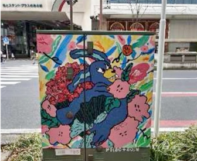
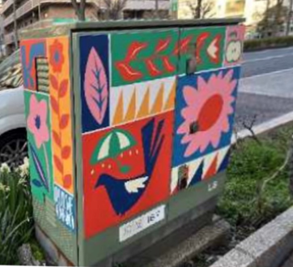

第一回
★路上観察★
－No.1－
トリックアートの壁紙
撮影日：10月２日
これは横浜駅スカイビルのエスカレーター横にあった壁紙です。
エスカレーター間のわずかなスペースを利用しており、通りかかった時はユニークで思わず見てしまいます。
写真は学校帰りにみりさんとなーこさんに協力してもらい撮影しました。
－No.2－


撮影日：10月12日
川崎の市役所通りを歩いているときに見つけました。
駅までの大通りに合計12個設置してあり、どれもデザインが違うので見つけるたびに写真を撮ってしまいました！
ホームページには特にかわいいと思った2種類を載せました
帰宅してから調べてみたところ...
これは地上用変圧機で、川崎市が行う「若者文化の発信事業」の一貫として
アーティストによって制作されたそうです
どこにでもある地上用変圧器にデザインを施し、街に彩りを与える発想が素晴らしいなと思いました！